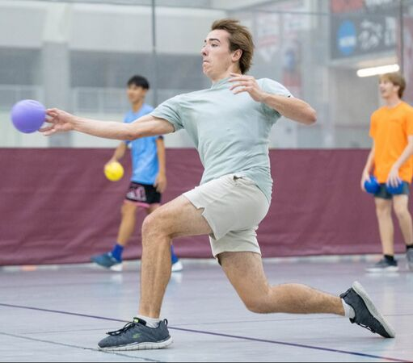

About
Academic Interests
From a young age, I have been interested in Robotics. It started with Transformers, Star Wars, and Power Rangers, but quickly became an academic pursuit. The field of robotics has always fascinated me with its unique solutions, problems, and range of applicability. Within robotics, I am incredibly invested in the potential of Swarm Robotics to shape the future of robotic potential. With such interest, I am interested in Biological-Inspired Robotics and Design, Swarm Intelligence and Behavior, and Low-Cost Modular Robot Design. I feel that all these aspects have potential for major breakthroughs in both the feasibility and capabilities of Robot Swarms and I am eager to get involved in the next step of the future.
Personal Life and Activities
I come from small town, rural Frankfort, Indiana. I graduated valedictorian of a class of 88 others amidst fields of corn and soybeans. Because of my school size, I lacked many engineering opportunities until college, with the exception of my starting of the FIRST Robotics Team my sophomore year of high school.
I have always tried to enrich my little time outside of academic work with a plethora of activities. While I do not consider myself an athlete by any sense of the word, I enjoy being active with Volleyball, Climbing, and Ping Pong. I try to stay involved in my community on and off campus through volunteering and service efforts such as Habitat for Humanity. For relaxation, I am a big foodie, cook, movie watcher, and game player whether it be video games, board games, or role-playing games. I also love music, wood working, and reading. I tend to be the type that has a ton of little projects always going on for hobby and fun.